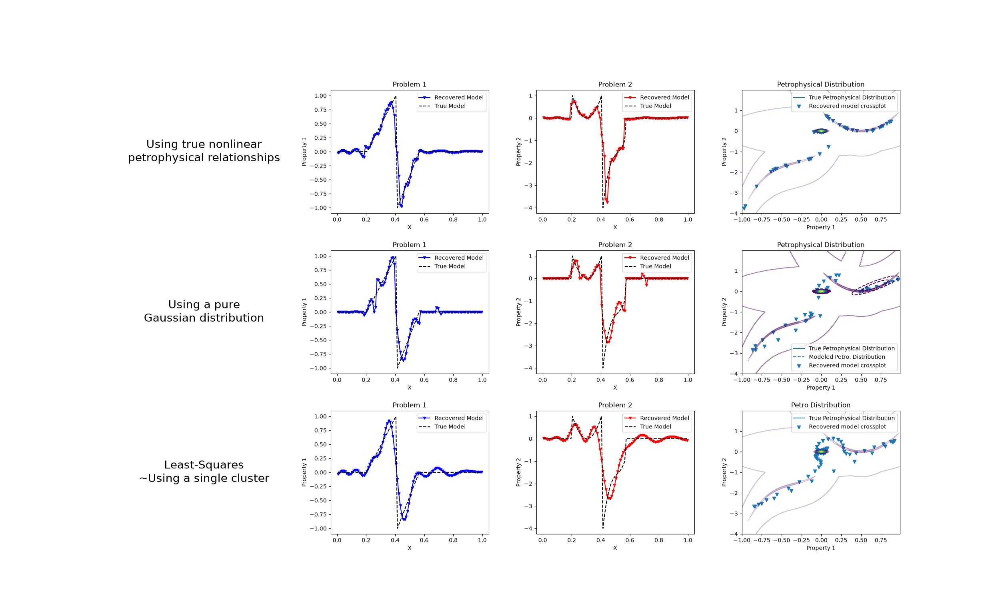

Note
Go to the end to download the full example code.
Petrophysically guided inversion: Joint linear example with nonlinear relationships#
We do a comparison between the classic least-squares inversion and our formulation of a petrophysically guided inversion. We explore it through coupling two linear problems whose respective physical properties are linked by polynomial relationships that change between rock units.

Running inversion with SimPEG v0.25.2.dev34+gbb9067d6c
Alpha scales: [np.float64(3.509058482615294), np.float64(0.0), np.float64(3.4988218344538408e-06), np.float64(0.0)]
Calculating the scaling parameter.
Scale Multipliers: [0.09850961 0.90149039]
<class 'simpeg.regularization.pgi.PGIsmallness'>
Initial data misfit scales: [0.09850961 0.90149039]
================================================= Projected GNCG =================================================
# beta phi_d phi_m f |proj(x-g)-x| LS iter_CG CG |Ax-b|/|b| CG |Ax-b| Comment
-----------------------------------------------------------------------------------------------------------------
0 1.93e+01 3.00e+05 0.00e+00 3.00e+05 0 inf inf
1 1.93e+01 1.44e+03 1.70e+02 4.71e+03 1.40e+02 0 21 7.65e-04 7.08e+03
geophys. misfits: 7634.8 (target 30.0 [False]); 761.8 (target 30.0 [False]) | smallness misfit: 3864.8 (target: 200.0 [False])
Beta cooling evaluation: progress: [7634.8 761.8]; minimum progress targets: [240000. 240000.]
2 1.93e+01 6.03e+01 4.09e+01 8.49e+02 1.39e+02 0 100 6.46e-03 4.58e+01 Skip BFGS
geophys. misfits: 487.6 (target 30.0 [False]); 13.6 (target 30.0 [True]) | smallness misfit: 1355.6 (target: 200.0 [False])
Beta cooling evaluation: progress: [487.6 13.6]; minimum progress targets: [6107.8 609.4]
Updating scaling for data misfits by 2.207112797967925
New scales: [0.19431535 0.80568465]
3 1.93e+01 4.75e+01 4.21e+01 8.59e+02 8.90e+01 0 100 1.15e-02 6.40e+00 Skip BFGS
geophys. misfits: 189.2 (target 30.0 [False]); 13.3 (target 30.0 [True]) | smallness misfit: 1092.4 (target: 200.0 [False])
Beta cooling evaluation: progress: [189.2 13.3]; minimum progress targets: [390. 30.]
Updating scaling for data misfits by 2.2538149495548616
New scales: [0.35215371 0.64784629]
4 1.93e+01 3.81e+01 4.35e+01 8.76e+02 8.33e+01 0 100 1.10e+00 6.09e+02
geophys. misfits: 82.0 (target 30.0 [False]); 14.3 (target 30.0 [True]) | smallness misfit: 1028.6 (target: 200.0 [False])
Beta cooling evaluation: progress: [82. 14.3]; minimum progress targets: [151.4 30. ]
Updating scaling for data misfits by 2.1016476262911445
New scales: [0.5332349 0.4667651]
5 1.93e+01 3.33e+01 4.42e+01 8.85e+02 8.25e+01 0 100 1.82e-01 1.78e+02 Skip BFGS
geophys. misfits: 47.9 (target 30.0 [False]); 16.6 (target 30.0 [True]) | smallness misfit: 977.3 (target: 200.0 [False])
Beta cooling evaluation: progress: [47.9 16.6]; minimum progress targets: [65.6 30. ]
Updating scaling for data misfits by 1.8042465006286907
New scales: [0.67332866 0.32667134]
6 1.93e+01 3.14e+01 4.45e+01 8.88e+02 8.53e+01 0 100 2.36e-02 5.59e+00 Skip BFGS
geophys. misfits: 36.6 (target 30.0 [False]); 20.7 (target 30.0 [True]) | smallness misfit: 928.6 (target: 200.0 [False])
Beta cooling evaluation: progress: [36.6 20.7]; minimum progress targets: [38.3 30. ]
Updating scaling for data misfits by 1.4462128141916604
New scales: [0.74880089 0.25119911]
7 1.93e+01 3.08e+01 4.45e+01 8.89e+02 6.04e+01 0 100 7.10e-02 6.35e+00 Skip BFGS
geophys. misfits: 32.7 (target 30.0 [False]); 25.1 (target 30.0 [True]) | smallness misfit: 895.2 (target: 200.0 [False])
Beta cooling evaluation: progress: [32.7 25.1]; minimum progress targets: [30. 30.]
Decreasing beta to counter data misfit decrase plateau.
Updating scaling for data misfits by 1.1962285307116842
New scales: [0.78098247 0.21901753]
8 9.63e+00 1.73e+01 4.55e+01 4.56e+02 8.53e+01 0 100 4.82e-01 2.06e+02
geophys. misfits: 17.5 (target 30.0 [True]); 16.6 (target 30.0 [True]) | smallness misfit: 963.8 (target: 200.0 [False])
Beta cooling evaluation: progress: [17.5 16.6]; minimum progress targets: [30. 30.]
Warming alpha_pgi to favor clustering: 1.76080029219409
9 9.63e+00 1.90e+01 4.69e+01 4.70e+02 7.71e+01 0 100 3.52e-02 7.88e+00
geophys. misfits: 17.6 (target 30.0 [True]); 23.7 (target 30.0 [True]) | smallness misfit: 844.3 (target: 200.0 [False])
Beta cooling evaluation: progress: [17.6 23.7]; minimum progress targets: [30. 30.]
Warming alpha_pgi to favor clustering: 2.6087813062892713
10 9.63e+00 2.10e+01 4.82e+01 4.86e+02 5.37e+01 0 100 3.03e+00 2.61e+02
geophys. misfits: 17.9 (target 30.0 [True]); 32.1 (target 30.0 [False]) | smallness misfit: 756.9 (target: 200.0 [False])
Beta cooling evaluation: progress: [17.9 32.1]; minimum progress targets: [30. 30.]
Decreasing beta to counter data misfit increase.
Updating scaling for data misfits by 1.6753298803525065
New scales: [0.68035221 0.31964779]
11 4.82e+00 1.40e+01 4.93e+01 2.51e+02 9.50e+01 0 100 6.28e-01 2.65e+02
geophys. misfits: 13.8 (target 30.0 [True]); 14.3 (target 30.0 [True]) | smallness misfit: 881.1 (target: 200.0 [False])
Beta cooling evaluation: progress: [13.8 14.3]; minimum progress targets: [30. 30.]
Warming alpha_pgi to favor clustering: 5.566589495820422
12 4.82e+00 1.67e+01 5.40e+01 2.77e+02 8.06e+01 0 100 6.89e-01 2.11e+02
geophys. misfits: 14.4 (target 30.0 [True]); 21.6 (target 30.0 [True]) | smallness misfit: 692.2 (target: 200.0 [False])
Beta cooling evaluation: progress: [14.4 21.6]; minimum progress targets: [30. 30.]
Warming alpha_pgi to favor clustering: 9.643319640638504
13 4.82e+00 1.94e+01 5.95e+01 3.06e+02 9.06e+01 0 100 2.54e+00 7.48e+02
geophys. misfits: 15.3 (target 30.0 [True]); 28.0 (target 30.0 [True]) | smallness misfit: 593.8 (target: 200.0 [False])
Beta cooling evaluation: progress: [15.3 28. ]; minimum progress targets: [30. 30.]
Warming alpha_pgi to favor clustering: 14.588368955480561
14 4.82e+00 2.24e+01 6.53e+01 3.37e+02 1.03e+02 0 100 7.09e+00 5.69e+03
geophys. misfits: 16.1 (target 30.0 [True]); 35.7 (target 30.0 [False]) | smallness misfit: 518.6 (target: 200.0 [False])
Beta cooling evaluation: progress: [16.1 35.7]; minimum progress targets: [30. 30.]
Decreasing beta to counter data misfit increase.
Updating scaling for data misfits by 1.8585676439805148
New scales: [0.53384436 0.46615564]
15 2.41e+00 1.52e+01 6.76e+01 1.78e+02 1.00e+02 0 100 5.40e-02 2.55e+02
geophys. misfits: 14.5 (target 30.0 [True]); 16.0 (target 30.0 [True]) | smallness misfit: 554.7 (target: 200.0 [False])
Beta cooling evaluation: progress: [14.5 16. ]; minimum progress targets: [30. 30.]
Warming alpha_pgi to favor clustering: 28.807602048822098
16 2.41e+00 1.87e+01 8.29e+01 2.18e+02 1.00e+02 0 100 2.86e+00 1.19e+03
geophys. misfits: 16.5 (target 30.0 [True]); 21.3 (target 30.0 [True]) | smallness misfit: 454.8 (target: 200.0 [False])
Beta cooling evaluation: progress: [16.5 21.3]; minimum progress targets: [30. 30.]
Warming alpha_pgi to favor clustering: 46.51837532635424
17 2.41e+00 1.75e+01 1.01e+02 2.60e+02 1.15e+02 0 100 1.61e+00 2.04e+03
geophys. misfits: 18.1 (target 30.0 [True]); 16.7 (target 30.0 [True]) | smallness misfit: 391.2 (target: 200.0 [False])
Beta cooling evaluation: progress: [18.1 16.7]; minimum progress targets: [30. 30.]
Warming alpha_pgi to favor clustering: 80.21593179661032
18 2.41e+00 2.43e+01 1.24e+02 3.22e+02 1.28e+02 0 100 1.25e+00 2.78e+03
geophys. misfits: 20.9 (target 30.0 [True]); 28.2 (target 30.0 [True]) | smallness misfit: 331.5 (target: 200.0 [False])
Beta cooling evaluation: progress: [20.9 28.2]; minimum progress targets: [30. 30.]
Warming alpha_pgi to favor clustering: 100.26508522940361
19 2.41e+00 2.72e+01 1.37e+02 3.58e+02 1.31e+02 0 100 1.45e+00 4.13e+03
geophys. misfits: 24.9 (target 30.0 [True]); 29.7 (target 30.0 [True]) | smallness misfit: 318.1 (target: 200.0 [False])
Beta cooling evaluation: progress: [24.9 29.7]; minimum progress targets: [30. 30.]
Warming alpha_pgi to favor clustering: 110.85892615870716
20 2.41e+00 2.81e+01 1.43e+02 3.72e+02 1.34e+02 0 100 7.30e-01 3.04e+03
geophys. misfits: 23.7 (target 30.0 [True]); 33.0 (target 30.0 [False]) | smallness misfit: 290.3 (target: 200.0 [False])
Beta cooling evaluation: progress: [23.7 33. ]; minimum progress targets: [30. 30.]
Decreasing beta to counter data misfit increase.
Updating scaling for data misfits by 1.263396100853465
New scales: [0.47546506 0.52453494]
21 1.20e+00 2.02e+01 1.47e+02 1.97e+02 1.15e+02 0 100 8.35e-01 2.61e+03
geophys. misfits: 19.1 (target 30.0 [True]); 21.2 (target 30.0 [True]) | smallness misfit: 291.0 (target: 200.0 [False])
Beta cooling evaluation: progress: [19.1 21.2]; minimum progress targets: [30. 30.]
Warming alpha_pgi to favor clustering: 165.43913488168639
22 1.20e+00 2.01e+01 1.81e+02 2.38e+02 1.27e+02 0 100 8.13e-01 2.20e+03
geophys. misfits: 21.6 (target 30.0 [True]); 18.6 (target 30.0 [True]) | smallness misfit: 259.7 (target: 200.0 [False])
Beta cooling evaluation: progress: [21.6 18.6]; minimum progress targets: [30. 30.]
Warming alpha_pgi to favor clustering: 247.87022635905578
23 1.20e+00 2.50e+01 2.04e+02 2.71e+02 1.29e+02 1 100 1.27e+00 3.10e+03
geophys. misfits: 23.4 (target 30.0 [True]); 26.4 (target 30.0 [True]) | smallness misfit: 203.4 (target: 200.0 [False])
Beta cooling evaluation: progress: [23.4 26.4]; minimum progress targets: [30. 30.]
Warming alpha_pgi to favor clustering: 299.72871709959446
24 1.20e+00 2.80e+01 2.19e+02 2.92e+02 1.30e+02 1 100 5.54e-01 1.58e+03
geophys. misfits: 28.1 (target 30.0 [True]); 28.0 (target 30.0 [True]) | smallness misfit: 183.1 (target: 200.0 [True])
All targets have been reached
Beta cooling evaluation: progress: [28.1 28. ]; minimum progress targets: [30. 30.]
Warming alpha_pgi to favor clustering: 320.9872284802955
------------------------- STOP! -------------------------
1 : |fc-fOld| = 1.0693e+01 <= tolF*(1+|f0|) = 3.0000e+04
0 : |xc-x_last| = 3.7272e-01 <= tolX*(1+|x0|) = 1.0000e-06
0 : |proj(x-g)-x| = 1.3031e+02 <= tolG = 1.0000e-01
0 : |proj(x-g)-x| = 1.3031e+02 <= 1e3*eps = 1.0000e-02
0 : maxIter = 50 <= iter = 24
------------------------- DONE! -------------------------
Running inversion with SimPEG v0.25.2.dev34+gbb9067d6c
Alpha scales: [np.float64(0.00034993682425202847), np.float64(0.0), np.float64(3.5015969270766036e-06), np.float64(0.0)]
Calculating the scaling parameter.
Scale Multipliers: [0.09850961 0.90149039]
<class 'simpeg.regularization.pgi.PGIsmallness'>
Initial data misfit scales: [0.09850961 0.90149039]
================================================= Projected GNCG =================================================
# beta phi_d phi_m f |proj(x-g)-x| LS iter_CG CG |Ax-b|/|b| CG |Ax-b| Comment
-----------------------------------------------------------------------------------------------------------------
0 1.95e+03 3.00e+05 0.00e+00 3.00e+05 0 inf inf
1 1.95e+03 6.57e+04 2.23e+01 1.09e+05 1.41e+02 0 15 5.32e-04 4.93e+03
geophys. misfits: 91228.0 (target 30.0 [False]); 62905.1 (target 30.0 [False]) | smallness misfit: 248.7 (target: 200.0 [False])
Beta cooling evaluation: progress: [91228. 62905.1]; minimum progress targets: [240000. 240000.]
2 1.95e+03 6.64e+01 5.54e-01 1.15e+03 1.34e+02 0 100 4.25e-02 1.16e+03 Skip BFGS
geophys. misfits: 579.7 (target 30.0 [False]); 10.3 (target 30.0 [True]) | smallness misfit: 109.7 (target: 200.0 [True])
Beta cooling evaluation: progress: [579.7 10.3]; minimum progress targets: [72982.4 50324. ]
Updating scaling for data misfits by 2.905057538113075
New scales: [0.24095661 0.75904339]
3 1.95e+03 1.75e+01 1.40e-01 2.90e+02 1.18e+02 0 100 5.47e-02 2.13e+02 Skip BFGS
geophys. misfits: 36.5 (target 30.0 [False]); 11.4 (target 30.0 [True]) | smallness misfit: 55.7 (target: 200.0 [True])
Beta cooling evaluation: progress: [36.5 11.4]; minimum progress targets: [463.8 30. ]
Updating scaling for data misfits by 2.628445589647344
New scales: [0.45486088 0.54513912]
4 1.95e+03 1.58e+01 1.38e-01 2.84e+02 1.03e+02 0 100 8.38e-03 8.03e+00
geophys. misfits: 20.6 (target 30.0 [True]); 11.7 (target 30.0 [True]) | smallness misfit: 68.5 (target: 200.0 [True])
All targets have been reached
Beta cooling evaluation: progress: [20.6 11.7]; minimum progress targets: [30. 30.]
Warming alpha_pgi to favor clustering: 2.009189487283499
------------------------- STOP! -------------------------
1 : |fc-fOld| = 2.6367e+01 <= tolF*(1+|f0|) = 3.0000e+04
0 : |xc-x_last| = 2.4469e-01 <= tolX*(1+|x0|) = 1.0000e-06
0 : |proj(x-g)-x| = 1.0319e+02 <= tolG = 1.0000e-01
0 : |proj(x-g)-x| = 1.0319e+02 <= 1e3*eps = 1.0000e-02
0 : maxIter = 50 <= iter = 4
------------------------- DONE! -------------------------
Running inversion with SimPEG v0.25.2.dev34+gbb9067d6c
Alpha scales: [np.float64(3.498490272335772e-05), np.float64(0.0), np.float64(3.332854573884005e-05), np.float64(0.0)]
Calculating the scaling parameter.
Scale Multipliers: [0.09850961 0.90149039]
/home/vsts/work/1/s/simpeg/directives/_directives.py:334: UserWarning: There is no PGI regularization. Smallness target is turned off (TriggerSmall flag)
getattr(r, ruleType)()
Initial data misfit scales: [0.09850961 0.90149039]
================================================= Projected GNCG =================================================
# beta phi_d phi_m f |proj(x-g)-x| LS iter_CG CG |Ax-b|/|b| CG |Ax-b| Comment
-----------------------------------------------------------------------------------------------------------------
0 1.08e+06 3.00e+05 0.00e+00 3.00e+05 0 inf inf
1 1.08e+06 4.21e+04 4.07e-02 8.61e+04 1.40e+02 0 23 9.24e-04 8.56e+03
geophys. misfits: 59819.6 (target 30.0 [False]); 40172.9 (target 30.0 [False])
2 2.16e+05 4.50e+03 1.05e-01 2.71e+04 1.37e+02 0 100 8.19e-02 1.52e+03 Skip BFGS
geophys. misfits: 8502.7 (target 30.0 [False]); 4064.2 (target 30.0 [False])
3 4.32e+04 2.84e+02 1.39e-01 6.30e+03 1.31e+02 0 100 1.01e+00 5.53e+03 Skip BFGS
geophys. misfits: 564.7 (target 30.0 [False]); 253.7 (target 30.0 [False])
4 8.63e+03 2.35e+01 1.50e-01 1.32e+03 1.07e+02 0 100 2.59e-03 1.46e+01 Skip BFGS
geophys. misfits: 38.4 (target 30.0 [False]); 21.9 (target 30.0 [True])
Updating scaling for data misfits by 1.3704039267848342
New scales: [0.13024551 0.86975449]
5 1.73e+03 7.27e+00 1.53e-01 2.72e+02 7.70e+01 0 100 2.83e-01 7.33e+01 Skip BFGS
geophys. misfits: 12.7 (target 30.0 [True]); 6.5 (target 30.0 [True])
All targets have been reached
------------------------- STOP! -------------------------
1 : |fc-fOld| = 1.0974e+01 <= tolF*(1+|f0|) = 3.0000e+04
0 : |xc-x_last| = 3.8627e-01 <= tolX*(1+|x0|) = 1.0000e-06
0 : |proj(x-g)-x| = 7.7031e+01 <= tolG = 1.0000e-01
0 : |proj(x-g)-x| = 7.7031e+01 <= 1e3*eps = 1.0000e-02
0 : maxIter = 50 <= iter = 5
------------------------- DONE! -------------------------
/home/vsts/work/1/s/examples/10-pgi/plot_inv_1_PGI_Linear_1D_joint_WithRelationships.py:302: UserWarning: marker is redundantly defined by the 'marker' keyword argument and the fmt string "b.-" (-> marker='.'). The keyword argument will take precedence.
axes[1].plot(mesh.cell_centers_x, wires.m1 * mcluster_map, "b.-", ms=5, marker="v")
/home/vsts/work/1/s/examples/10-pgi/plot_inv_1_PGI_Linear_1D_joint_WithRelationships.py:309: UserWarning: marker is redundantly defined by the 'marker' keyword argument and the fmt string "r.-" (-> marker='.'). The keyword argument will take precedence.
axes[2].plot(mesh.cell_centers_x, wires.m2 * mcluster_map, "r.-", ms=5, marker="v")
/home/vsts/work/1/s/examples/10-pgi/plot_inv_1_PGI_Linear_1D_joint_WithRelationships.py:353: UserWarning: marker is redundantly defined by the 'marker' keyword argument and the fmt string "b.-" (-> marker='.'). The keyword argument will take precedence.
axes[5].plot(mesh.cell_centers_x, wires.m1 * mcluster_no_map, "b.-", ms=5, marker="v")
/home/vsts/work/1/s/examples/10-pgi/plot_inv_1_PGI_Linear_1D_joint_WithRelationships.py:360: UserWarning: marker is redundantly defined by the 'marker' keyword argument and the fmt string "r.-" (-> marker='.'). The keyword argument will take precedence.
axes[6].plot(mesh.cell_centers_x, wires.m2 * mcluster_no_map, "r.-", ms=5, marker="v")
/home/vsts/work/1/s/examples/10-pgi/plot_inv_1_PGI_Linear_1D_joint_WithRelationships.py:412: UserWarning: marker is redundantly defined by the 'marker' keyword argument and the fmt string "b.-" (-> marker='.'). The keyword argument will take precedence.
axes[9].plot(mesh.cell_centers_x, wires.m1 * mtik, "b.-", ms=5, marker="v")
/home/vsts/work/1/s/examples/10-pgi/plot_inv_1_PGI_Linear_1D_joint_WithRelationships.py:419: UserWarning: marker is redundantly defined by the 'marker' keyword argument and the fmt string "r.-" (-> marker='.'). The keyword argument will take precedence.
axes[10].plot(mesh.cell_centers_x, wires.m2 * mtik, "r.-", ms=5, marker="v")
import discretize as Mesh
import matplotlib.pyplot as plt
import matplotlib.lines as mlines
import numpy as np
from simpeg import (
data_misfit,
directives,
inverse_problem,
inversion,
maps,
optimization,
regularization,
simulation,
utils,
)
# Random seed for reproductibility
np.random.seed(1)
# Mesh
N = 100
mesh = Mesh.TensorMesh([N])
# Survey design parameters
nk = 30
jk = np.linspace(1.0, 59.0, nk)
p = -0.25
q = 0.25
# Physics
def g(k):
return np.exp(p * jk[k] * mesh.cell_centers_x) * np.cos(
np.pi * q * jk[k] * mesh.cell_centers_x
)
G = np.empty((nk, mesh.nC))
for i in range(nk):
G[i, :] = g(i)
m0 = np.zeros(mesh.nC)
m0[20:41] = np.linspace(0.0, 1.0, 21)
m0[41:57] = np.linspace(-1, 0.0, 16)
poly0 = maps.PolynomialPetroClusterMap(coeffyx=np.r_[0.0, -4.0, 4.0])
poly1 = maps.PolynomialPetroClusterMap(coeffyx=np.r_[-0.0, 3.0, 6.0, 6.0])
poly0_inverse = maps.PolynomialPetroClusterMap(coeffyx=-np.r_[0.0, -4.0, 4.0])
poly1_inverse = maps.PolynomialPetroClusterMap(coeffyx=-np.r_[0.0, 3.0, 6.0, 6.0])
cluster_mapping = [maps.IdentityMap(), poly0_inverse, poly1_inverse]
m1 = np.zeros(100)
m1[20:41] = 1.0 + (poly0 * np.vstack([m0[20:41], m1[20:41]]).T)[:, 1]
m1[41:57] = -1.0 + (poly1 * np.vstack([m0[41:57], m1[41:57]]).T)[:, 1]
model2d = np.vstack([m0, m1]).T
m = utils.mkvc(model2d)
clfmapping = utils.GaussianMixtureWithNonlinearRelationships(
mesh=mesh,
n_components=3,
covariance_type="full",
tol=1e-8,
reg_covar=1e-3,
max_iter=1000,
n_init=100,
init_params="kmeans",
random_state=None,
warm_start=False,
means_init=np.array(
[
[0, 0],
[m0[20:41].mean(), m1[20:41].mean()],
[m0[41:57].mean(), m1[41:57].mean()],
]
),
verbose=0,
verbose_interval=10,
cluster_mapping=cluster_mapping,
)
clfmapping = clfmapping.fit(model2d)
clfnomapping = utils.WeightedGaussianMixture(
mesh=mesh,
n_components=3,
covariance_type="full",
tol=1e-8,
reg_covar=1e-3,
max_iter=1000,
n_init=100,
init_params="kmeans",
random_state=None,
warm_start=False,
verbose=0,
verbose_interval=10,
)
clfnomapping = clfnomapping.fit(model2d)
wires = maps.Wires(("m1", mesh.nC), ("m2", mesh.nC))
relatrive_error = 0.01
noise_floor = 0.0
prob1 = simulation.LinearSimulation(mesh, G=G, model_map=wires.m1)
survey1 = prob1.make_synthetic_data(
m, relative_error=relatrive_error, noise_floor=noise_floor, add_noise=True
)
prob2 = simulation.LinearSimulation(mesh, G=G, model_map=wires.m2)
survey2 = prob2.make_synthetic_data(
m, relative_error=relatrive_error, noise_floor=noise_floor, add_noise=True
)
dmis1 = data_misfit.L2DataMisfit(simulation=prob1, data=survey1)
dmis2 = data_misfit.L2DataMisfit(simulation=prob2, data=survey2)
dmis = dmis1 + dmis2
minit = np.zeros_like(m)
# Distance weighting
wr1 = np.sum(prob1.G**2.0, axis=0) ** 0.5 / mesh.cell_volumes
wr1 = wr1 / np.max(wr1)
wr2 = np.sum(prob2.G**2.0, axis=0) ** 0.5 / mesh.cell_volumes
wr2 = wr2 / np.max(wr2)
reg_simple = regularization.PGI(
mesh=mesh,
gmmref=clfmapping,
gmm=clfmapping,
approx_gradient=True,
wiresmap=wires,
non_linear_relationships=True,
weights_list=[wr1, wr2],
)
opt = optimization.ProjectedGNCG(
maxIter=50,
tolX=1e-6,
cg_maxiter=100,
cg_rtol=1e-3,
lower=-10,
upper=10,
)
invProb = inverse_problem.BaseInvProblem(dmis, reg_simple, opt)
# directives
scales = directives.ScalingMultipleDataMisfits_ByEig(
chi0_ratio=np.r_[1.0, 1.0], verbose=True, n_pw_iter=10
)
scaling_schedule = directives.JointScalingSchedule(verbose=True)
alpha0_ratio = np.r_[1e6, 1e4, 1, 1]
alphas = directives.AlphasSmoothEstimate_ByEig(
alpha0_ratio=alpha0_ratio, n_pw_iter=10, verbose=True
)
beta = directives.BetaEstimate_ByEig(beta0_ratio=1e-5, n_pw_iter=10)
betaIt = directives.PGI_BetaAlphaSchedule(
verbose=True,
coolingFactor=2.0,
progress=0.2,
)
targets = directives.MultiTargetMisfits(verbose=True)
petrodir = directives.PGI_UpdateParameters(update_gmm=False)
# Setup Inversion
inv = inversion.BaseInversion(
invProb,
directiveList=[alphas, scales, beta, petrodir, targets, betaIt, scaling_schedule],
)
mcluster_map = inv.run(minit)
# Inversion with no nonlinear mapping
reg_simple_no_map = regularization.PGI(
mesh=mesh,
gmmref=clfnomapping,
gmm=clfnomapping,
approx_gradient=True,
wiresmap=wires,
non_linear_relationships=False,
weights_list=[wr1, wr2],
)
opt = optimization.ProjectedGNCG(
maxIter=50,
tolX=1e-6,
cg_maxiter=100,
cg_rtol=1e-3,
lower=-10,
upper=10,
)
invProb = inverse_problem.BaseInvProblem(dmis, reg_simple_no_map, opt)
# directives
scales = directives.ScalingMultipleDataMisfits_ByEig(
chi0_ratio=np.r_[1.0, 1.0], verbose=True, n_pw_iter=10
)
scaling_schedule = directives.JointScalingSchedule(verbose=True)
alpha0_ratio = np.r_[100.0 * np.ones(2), 1, 1]
alphas = directives.AlphasSmoothEstimate_ByEig(
alpha0_ratio=alpha0_ratio, n_pw_iter=10, verbose=True
)
beta = directives.BetaEstimate_ByEig(beta0_ratio=1e-5, n_pw_iter=10)
betaIt = directives.PGI_BetaAlphaSchedule(
verbose=True,
coolingFactor=2.0,
progress=0.2,
)
targets = directives.MultiTargetMisfits(
chiSmall=1.0, TriggerSmall=True, TriggerTheta=False, verbose=True
)
petrodir = directives.PGI_UpdateParameters(update_gmm=False)
# Setup Inversion
inv = inversion.BaseInversion(
invProb,
directiveList=[alphas, scales, beta, petrodir, targets, betaIt, scaling_schedule],
)
mcluster_no_map = inv.run(minit)
# WeightedLeastSquares Inversion
reg1 = regularization.WeightedLeastSquares(
mesh, alpha_s=1.0, alpha_x=1.0, mapping=wires.m1, weights={"cell_weights": wr1}
)
reg2 = regularization.WeightedLeastSquares(
mesh, alpha_s=1.0, alpha_x=1.0, mapping=wires.m2, weights={"cell_weights": wr2}
)
reg = reg1 + reg2
opt = optimization.ProjectedGNCG(
maxIter=50,
tolX=1e-6,
cg_maxiter=100,
cg_rtol=1e-3,
lower=-10,
upper=10,
)
invProb = inverse_problem.BaseInvProblem(dmis, reg, opt)
# directives
alpha0_ratio = np.r_[1, 1, 1, 1]
alphas = directives.AlphasSmoothEstimate_ByEig(
alpha0_ratio=alpha0_ratio, n_pw_iter=10, verbose=True
)
scales = directives.ScalingMultipleDataMisfits_ByEig(
chi0_ratio=np.r_[1.0, 1.0], verbose=True, n_pw_iter=10
)
scaling_schedule = directives.JointScalingSchedule(verbose=True)
beta = directives.BetaEstimate_ByEig(beta0_ratio=1e-5, n_pw_iter=10)
beta_schedule = directives.BetaSchedule(coolingFactor=5.0, coolingRate=1)
targets = directives.MultiTargetMisfits(
TriggerSmall=False,
verbose=True,
)
# Setup Inversion
inv = inversion.BaseInversion(
invProb,
directiveList=[alphas, scales, beta, targets, beta_schedule, scaling_schedule],
)
mtik = inv.run(minit)
# Final Plot
fig, axes = plt.subplots(3, 4, figsize=(25, 15))
axes = axes.reshape(12)
left, width = 0.25, 0.5
bottom, height = 0.25, 0.5
right = left + width
top = bottom + height
axes[0].set_axis_off()
axes[0].text(
0.5 * (left + right),
0.5 * (bottom + top),
("Using true nonlinear\npetrophysical relationships"),
horizontalalignment="center",
verticalalignment="center",
fontsize=20,
color="black",
transform=axes[0].transAxes,
)
axes[1].plot(mesh.cell_centers_x, wires.m1 * mcluster_map, "b.-", ms=5, marker="v")
axes[1].plot(mesh.cell_centers_x, wires.m1 * m, "k--")
axes[1].set_title("Problem 1")
axes[1].legend(["Recovered Model", "True Model"], loc=1)
axes[1].set_xlabel("X")
axes[1].set_ylabel("Property 1")
axes[2].plot(mesh.cell_centers_x, wires.m2 * mcluster_map, "r.-", ms=5, marker="v")
axes[2].plot(mesh.cell_centers_x, wires.m2 * m, "k--")
axes[2].set_title("Problem 2")
axes[2].legend(["Recovered Model", "True Model"], loc=1)
axes[2].set_xlabel("X")
axes[2].set_ylabel("Property 2")
x, y = np.mgrid[-1:1:0.01, -4:2:0.01]
pos = np.empty(x.shape + (2,))
pos[:, :, 0] = x
pos[:, :, 1] = y
CS = axes[3].contour(
x,
y,
np.exp(clfmapping.score_samples(pos.reshape(-1, 2)).reshape(x.shape)),
100,
alpha=0.25,
cmap="viridis",
)
cs_proxy = mlines.Line2D([], [], label="True Petrophysical Distribution")
ps = axes[3].scatter(
wires.m1 * mcluster_map,
wires.m2 * mcluster_map,
marker="v",
label="Recovered model crossplot",
)
axes[3].set_title("Petrophysical Distribution")
axes[3].legend(handles=[cs_proxy, ps])
axes[3].set_xlabel("Property 1")
axes[3].set_ylabel("Property 2")
axes[4].set_axis_off()
axes[4].text(
0.5 * (left + right),
0.5 * (bottom + top),
("Using a pure\nGaussian distribution"),
horizontalalignment="center",
verticalalignment="center",
fontsize=20,
color="black",
transform=axes[4].transAxes,
)
axes[5].plot(mesh.cell_centers_x, wires.m1 * mcluster_no_map, "b.-", ms=5, marker="v")
axes[5].plot(mesh.cell_centers_x, wires.m1 * m, "k--")
axes[5].set_title("Problem 1")
axes[5].legend(["Recovered Model", "True Model"], loc=1)
axes[5].set_xlabel("X")
axes[5].set_ylabel("Property 1")
axes[6].plot(mesh.cell_centers_x, wires.m2 * mcluster_no_map, "r.-", ms=5, marker="v")
axes[6].plot(mesh.cell_centers_x, wires.m2 * m, "k--")
axes[6].set_title("Problem 2")
axes[6].legend(["Recovered Model", "True Model"], loc=1)
axes[6].set_xlabel("X")
axes[6].set_ylabel("Property 2")
CSF = axes[7].contour(
x,
y,
np.exp(clfmapping.score_samples(pos.reshape(-1, 2)).reshape(x.shape)),
100,
alpha=0.5,
label="True Petro. Distribution",
)
CS = axes[7].contour(
x,
y,
np.exp(clfnomapping.score_samples(pos.reshape(-1, 2)).reshape(x.shape)),
500,
cmap="viridis",
linestyles="--",
)
axes[7].scatter(
wires.m1 * mcluster_no_map,
wires.m2 * mcluster_no_map,
marker="v",
label="Recovered model crossplot",
)
cs_modeled_proxy = mlines.Line2D(
[], [], linestyle="--", label="Modeled Petro. Distribution"
)
axes[7].set_title("Petrophysical Distribution")
axes[7].legend(handles=[cs_proxy, cs_modeled_proxy, ps])
axes[7].set_xlabel("Property 1")
axes[7].set_ylabel("Property 2")
# Tikonov
axes[8].set_axis_off()
axes[8].text(
0.5 * (left + right),
0.5 * (bottom + top),
("Least-Squares\n~Using a single cluster"),
horizontalalignment="center",
verticalalignment="center",
fontsize=20,
color="black",
transform=axes[8].transAxes,
)
axes[9].plot(mesh.cell_centers_x, wires.m1 * mtik, "b.-", ms=5, marker="v")
axes[9].plot(mesh.cell_centers_x, wires.m1 * m, "k--")
axes[9].set_title("Problem 1")
axes[9].legend(["Recovered Model", "True Model"], loc=1)
axes[9].set_xlabel("X")
axes[9].set_ylabel("Property 1")
axes[10].plot(mesh.cell_centers_x, wires.m2 * mtik, "r.-", ms=5, marker="v")
axes[10].plot(mesh.cell_centers_x, wires.m2 * m, "k--")
axes[10].set_title("Problem 2")
axes[10].legend(["Recovered Model", "True Model"], loc=1)
axes[10].set_xlabel("X")
axes[10].set_ylabel("Property 2")
CS = axes[11].contour(
x,
y,
np.exp(clfmapping.score_samples(pos.reshape(-1, 2)).reshape(x.shape)),
100,
alpha=0.25,
cmap="viridis",
)
axes[11].scatter(wires.m1 * mtik, wires.m2 * mtik, marker="v")
axes[11].set_title("Petro Distribution")
axes[11].legend(handles=[cs_proxy, ps])
axes[11].set_xlabel("Property 1")
axes[11].set_ylabel("Property 2")
plt.subplots_adjust(wspace=0.3, hspace=0.3, top=0.85)
plt.show()
Total running time of the script: (0 minutes 23.476 seconds)
Estimated memory usage: 330 MB